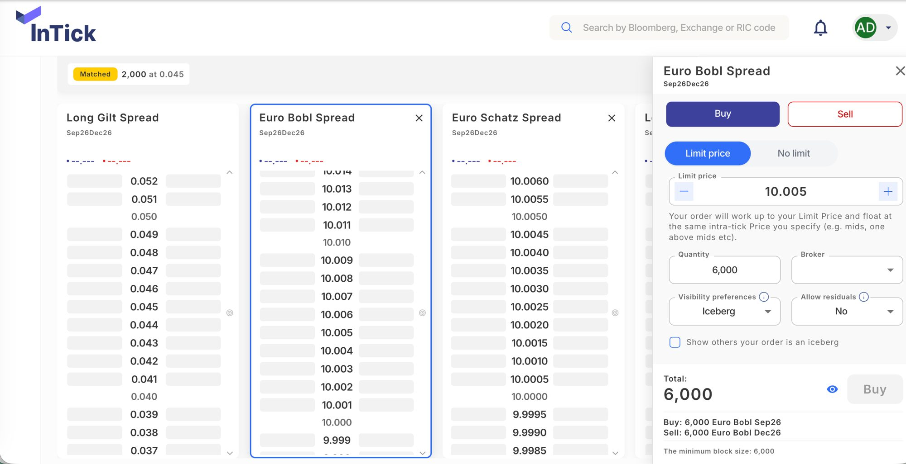
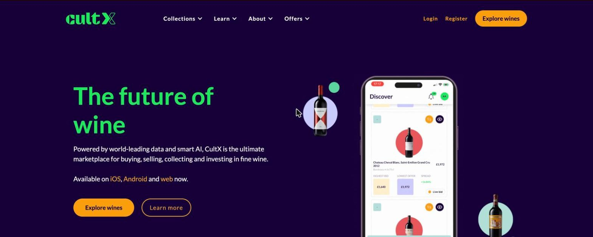
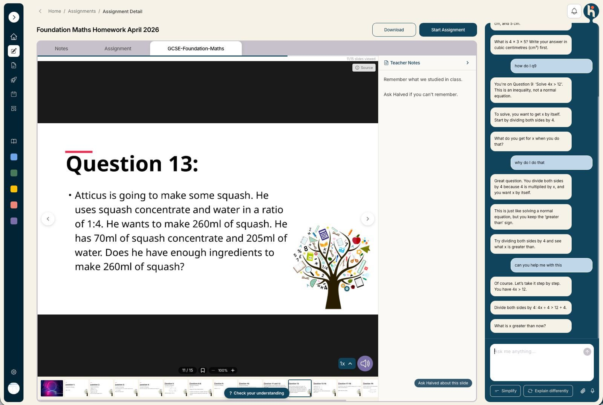
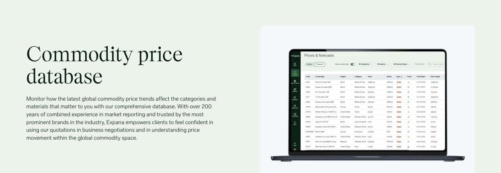

Trustflux Ltd · London · UK company · Outside IR35
Technology due diligence, fractional CTO and agentic AI consulting for financial services
Trustflux is the independent practice of Mindaugas Nakrošis - former VP of Technology at a derivatives block-trading platform and principal architect behind a $330M AUM investment platform. One senior practitioner who reads the codebase in the afternoon and presents to the deal partner the next morning.
Direct engagement through a UK limited company. You work directly with a senior practitioner - no account managers, no hand-offs.
- 10+ yearsFinTech, trading & platforms
- $330M AUMplatform architected
- Tier-1 bankson FIX connectivity
- ISO 27001programme led
For investors and acquirers
Technology and AI due diligence
Buy-side and sell-side technical due diligence for private equity, venture and corporate deal teams: architecture, codebase, cloud spend, team, delivery process and security posture. Findings are evidence-backed and quantified, with explicit assumptions and confidence levels - a deal position, not a fifty-page appendix.
Is the AI real, or a wrapper?
AI due diligence is now the part of tech DD where valuations move. I assess whether a target's AI capability is defensible or a thin layer over public model APIs: what is model versus prompt, how the system behaves outside the demo path, whether training data and model licensing hold up, and what the EU AI Act means for the product's risk category. I have built and shipped agentic AI in production at a regulated trading platform, so the assessment comes from practice, not a checklist.
- Technical due diligence of AI products and LLM systems, including agentic AI risk assessment
- Code and architecture review for acquisitions, with cloud cost baseline and scalability findings
- Sell-side (vendor) due diligence: preparing fintech and SaaS companies for the buyer's tech DD
For founders and boards
Fractional CTO for fintech and regulated platforms
Part-time or interim technology leadership for companies that need CTO-level judgement without a full-time hire: architecture direction, build-vs-buy decisions, hiring, delivery discipline and board-level translation between commercial and engineering. Based in London, engaging UK-wide through Trustflux Ltd, outside IR35.
- Advisory: architecture and technology decisions, a few hours or days as needed
- Short intensive: due diligence, architecture review, cost review, delivery reset
- Retainer: ongoing fractional CTO engagement, typically one to three days per week
Recent leadership context: full technical authority at a FinTech startup electronifying off-market block trading of futures and options - FIX connectivity into tier-1 banks and Eurex, an ISO 27001 programme, and a failure profile where a single failed execution would have been existential.
For regulated businesses
Agentic AI in production, with audit trails regulators accept
Most AI pilots never reach production, and in financial services the blocker is rarely the model - it is governance: who approved the action, what did the agent actually do, and can you prove it afterwards. I design and build agentic AI systems for regulated settings with observability, human checkpoints and complete audit trails built in from the start, because audit trails cannot be meaningfully retrofitted.
- Agentic system design and build: production LLM workflows, evaluation gates, guardrails
- AI agent observability and audit-trail design aligned to EU AI Act logging obligations and FCA expectations
- AI agent security review and AI capability assessment - separating shipped systems from demos
- Claude Code adoption for engineering teams: skills, hooks and review tooling, backed by published open-source work
This is deployed experience, not a practice area invented for the AI cycle: agentic AI ran in production trading workflows and operational tooling under my technical authority at a regulated trading venue.
For CTOs and finance leaders
Azure architecture and cost review
Azure-native platform design and modernisation: event-driven architecture on Service Bus, Azure Functions, AKS, API Management and CosmosDB, with Terraform infrastructure as code. And a productised Azure cost review built on open-source tooling I publish: a read-only agent that produces a tenant-wide cost review in about twenty minutes across dozens of subscriptions.
- £5,400-£7,400 / mosavings identified on a UK tenant spending c. £30k per month
- ~3x Azure Advisorversus the ceiling of Azure Advisor's own recommendations for the same tenant
- Read-only, repeatablebuilt for repeated use across a portfolio, not a one-off consultant deck
Fixed-scope engagement: cost review, quantified savings with stated assumptions, and an action plan your team can execute - or I implement it with you.
Hands-on engineering
Senior delivery: React, Next.js, Node.js and TypeScript on Azure
When the engagement calls for building rather than advising: React and Next.js front-ends, Node.js and NestJS event-driven microservices, GraphQL, real-time systems and FIX protocol connectivity - the stack behind the trading platforms and investment products above. TypeScript end to end, tested and deployed through proper CI/CD, including LLM integration where it earns its place.
- React
- Next.js
- TypeScript
- Node.js
- NestJS
- GraphQL
- FIX protocol
- Azure Functions
- AKS
- Service Bus
- CosmosDB
- Terraform
- LLM integration
Selected work
Platforms we have built and led
Trading venues, investment platforms and AI products that run in production - with real users, real money and real regulators.

The listed derivatives blocking network. As VP of Technology: platform architecture, FIX connectivity into tier-1 banks and asset managers, direct Eurex connectivity, and agentic AI in production trading workflows.

Fine wine trading platform on web, iOS and Android - real-time pricing across 100k live markets with over $250M of investment-grade wine listed. Built as front-office architect at Cult Wines on Azure, React and GraphQL.
Vacation rental marketplace with 2 million daily users. Led React UI development on the search experience across hundreds of data providers, with a design system serving multiple domains and brands from one codebase.

AI-native learning platform for schools: lesson notes, assignments and an embedded AI tutor that guides pupils step by step instead of giving answers - an agentic AI product built for a setting where trust and safeguarding matter.

Commodity price intelligence for global food and agriculture markets - over 36,000 price series tracked. Senior contract engineering on the market data platform, delivered through Trustflux by one of our contract engineers.
Why Trustflux
Track record
Ten-plus years across FinTech, alternative investments, marketplaces and enterprise platforms, on every side of the table a diligence practitioner meets: interim executive, hands-on architect, contractor inside scale-ups, and founder. Writing at nakrosis.com/writing.
Before you ask
Common questions
Do you work outside IR35?
Yes. All engagements run business-to-business through Trustflux Ltd, a UK limited company, and are structured for an outside-IR35 determination: defined deliverables, own equipment and methods, no mutuality of obligation.
What does a technology due diligence engagement look like?
Typically a short intensive: access to the data room, codebase and key people, then a written report with quantified findings, explicit assumptions and a clear position - price implications, conditions, or reasons to walk. Timelines fit deal windows, usually one to two weeks.
How do you assess whether a product's AI is real?
By reading the system, not the pitch: what sits in the model versus the prompt layer, how the product behaves off the demo path, what breaks under adversarial input, the provenance and licensing of training data, and whether the audit trail can support the claims made to customers and regulators.
What does a fractional CTO cost compared with a full-time hire?
The rate is a flat £600 per day across all engagements - published, with no blended rates. A retainer of one to three days per week comes to roughly £2,400 to £7,200 a month, against a full-time London CTO package that commonly clears £250k all-in. UK market guides put fractional CTO day rates at £800 to £2,000, so this sits deliberately below the band. Full details on the fractional CTO page.
Tell me what you are trying to decide
An investment, a hire, a platform bet, an AI claim you want verified - email is the fastest way to reach me, and I will tell you honestly whether I am the right person for it.
Mindaugas Nakrošis · Trustflux Ltd · London · nakrosis.com · GitHub · LinkedIn